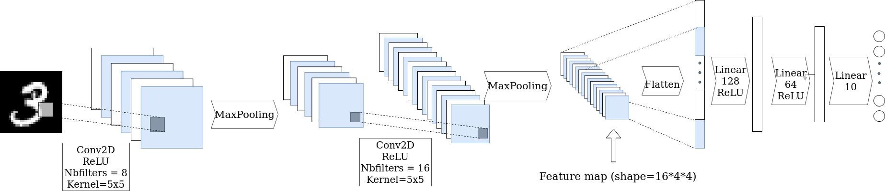
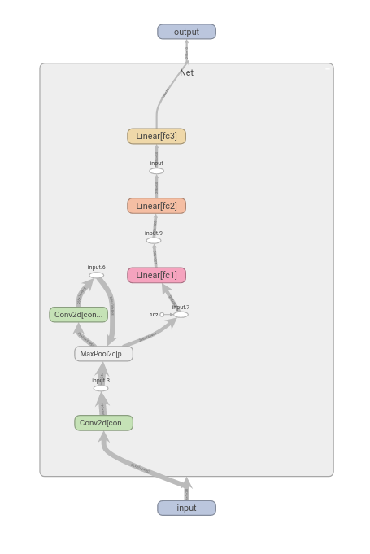
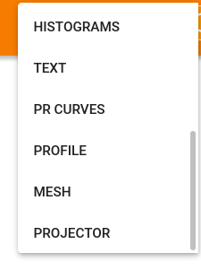
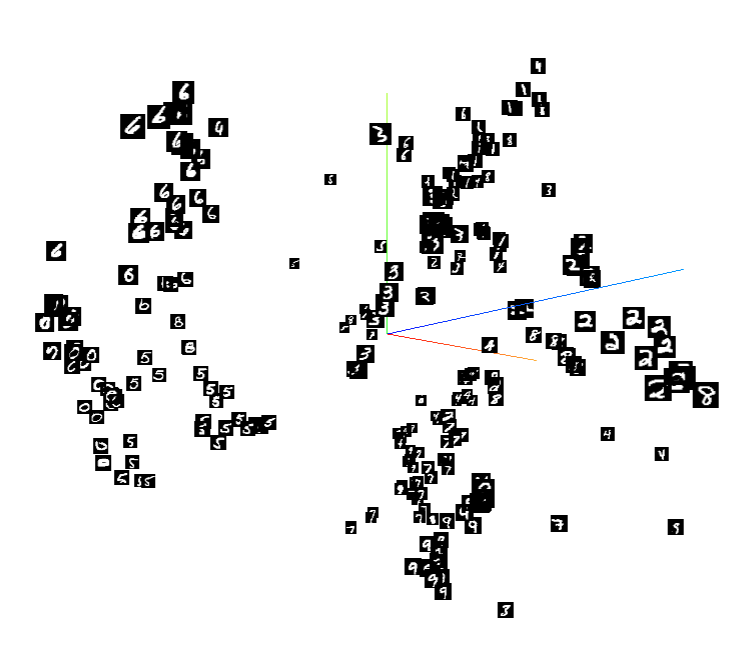

Development for Data Scientist:
Pytorch and Python Script
Course
Course notebook:
Practical session
For this session, you will have to write a script to train a small neural network on the MNIST dataset using Pytorch.
During training, you will use tensorboard to:
- monitor your network across epochs
- manage your experiments and hyper-parameters
- provide some visualizations.
Practical session repository:
If you haven't already done so, create an account on Github.
Then fork this repository and clone it on your computer.

The network class:

Using the figure above, fill in the following code, in the mnist_net.py file, to create the network class:
- The method
__init__()should instantiate all the layers that will be used by the network. - The method
forward()describes the forward graph of your network. All the pooling operations and activation functions are realized in this method. Do not forget to change the shape of your input before the first linear layer usingtorch.flatten(...)orx.view(...).
import torch
import torch.nn as nn
import torch.nn.functional as F
class MNISTNet(nn.Module):
def __init__(self):
super(MNNISTNet, self).__init__()
self.conv1 = nn.Conv2d(...)
self.conv2 = nn.Conv2d(...)
self.pool = nn.MaxPool2d(...)
self.fc1 = nn.Linear(...)
self.fc2 = nn.Linear(...)
self.fc3 = nn.Linear(...)
def forward(self, x):
x = F.relu(self.conv1(x)) # First convolution followed by
x = self.pool(x) # a relu activation and a max pooling#
x = ...
...
x = self.fc3(x)
return x
The training script
The previous file contained our model class. We will now complete the training script train_mnist.py.
This file will be used as a python script to train a neural network on the MNIST Dataset.
The train() and test() methods are already implemented.
import argparse
from statistics import mean
import torch
import torchvision
import torchvision.transforms as transforms
import torch.nn as nn
import torch.nn.functional as F
import torch.optim as optim
from tqdm import tqdm
from models import MNISTNet
# setting device on GPU if available, else CPU
device = torch.device('cuda' if torch.cuda.is_available() else 'cpu')
def train(net, optimizer, loader, epochs=10):
criterion = nn.CrossEntropyLoss()
for epoch in range(epochs):
running_loss = []
t = tqdm(loader)
for x, y in t:
x, y = x.to(device), y.to(device)
outputs = net(x)
loss = criterion(outputs, y)
running_loss.append(loss.item())
optimizer.zero_grad()
loss.backward()
optimizer.step()
t.set_description(f'training loss: {mean(running_loss)}')
def test(model, dataloader):
test_corrects = 0
total = 0
with torch.no_grad():
for x, y in dataloader:
x = x.to(device)
y = y.to(device)
y_hat = model(x).argmax(1)
test_corrects += y_hat.eq(y).sum().item()
total += y.size(0)
return test_corrects / total
We will now implement the main method that will be called every time the python script is executed.
We would like to give the user the possibility to adjust some parameters of the learning process, such as:
- The batch size
- The learning rate
- The number of training epochs
To do so we will use Python argparse module. This module is used to write user-friendly command-line interfaces.
Adding an argument to a python script using argaparse is pretty straightforward.
First you need to import the argparse module and instanciate a parser within the main method:
import argparse
if __name__=='__main__':
parser = argparse.ArgumentParser()
Then, just add a new argument to the parser precising the argument's name, its type, and optionaly a default value and an helping message.
parser.add_argument('--exp_name', type=str, default = 'MNIST', help='experiment name')
Finaly, you can use the arguments in the script by using an args variable.
args = parser.parse_args()
print(args.exp_name)
Complete the main method to parse the four possible arguments provided when executing the script:
if __name__=='__main__':
parser = argparse.ArgumentParser()
parser.add_argument('--exp_name', type=str, default = 'MNIST', help='experiment name')
parser.add_argument(...)
parser.add_argument(...)
parser.add_argument(...)
args = parser.parse_args()
exp_name = args.exp_name
epochs = ...
batch_size = ...
lr = ...
The following code instantiates two data loaders: one loading data from the training set, the other one from the test set.
# transforms
transform = transforms.Compose(
[transforms.ToTensor(),
transforms.Normalize((0.5,), (0.5,))])
# datasets
trainset = torchvision.datasets.MNIST('./data', download=True, train=True, transform=transform)
testset = torchvision.datasets.MNIST('./data', download=True, train=False, transform=transform)
# dataloaders
trainloader = torch.utils.data.DataLoader(trainset, batch_size=batch_size, shuffle=True, num_workers=2)
testloader = torch.utils.data.DataLoader(testset, batch_size=batch_size, shuffle=False, num_workers=2)
Instantiate a MNISTNet and a SGD optimizer using the learning rate provided in the script arguments and use the train method to train your network and the test method to compute the test accuracy.
net = ...
# setting net on device(GPU if available, else CPU)
net = net.to(device)
optimizer = optim.SGD(...)
train(...)
test_acc = test(...)
print(f'Test accuracy:{test_acc}')
Finally, save your model using the torch.save method.
torch.save(net.state_dict(), 'mnist_net.pth')
You should now be able to run your python script using the following command in your terminal:
python train_mnist.py --epochs=5 --lr=1e-3 --batch_size=64
Monitoring and experiment management
Training our model on MNIST is pretty fast.
Nonetheless, in most cases, training a network may be very long.
For such cases, it is essential to log partial results during training to ensure that everything is behaving as expected.
A very famous tool to monitor your experiments in deep learning is Tensorboard.
The main object used by Tensorboard is a SummaryWriter.
Add the following import:
from torch.utils.tensorboard import SummaryWriter
and modify the train method to take an additional argument named writer. Use its add_scalar method to log the training loss for every epoch.
def train(net, optimizer, loader, writer, epochs=10):
criterion = nn.CrossEntropyLoss()
for epoch in range(epochs):
running_loss = []
t = tqdm(loader)
for x, y in t:
x, y = x.to(device), y.to(device)
outputs = net(x)
loss = criterion(outputs, y)
running_loss.append(loss.item())
optimizer.zero_grad()
loss.backward()
optimizer.step()
t.set_description(f'training loss: {mean(running_loss)}')
writer.add_scalar('training loss', mean(running_loss), epoch)
In the main method instantiate a SummaryWriter with
writer = SummaryWriter(f'runs/MNIST')
and add it as argument to the train method.
Re-run your script and check your tensorboard logs using in a separate terminal:
tensorboard --logdir runs
You can use tensorboard to log many different things such as your network computational graph, images, samples from your dataset, embeddings, or even use it for experiment management.
Add a new method to the MNISTNet class to get the embeddings computed after the last convolutional layer.
def get_features(self, x):
x = self.pool(F.relu(self.conv1(x)))
x = self.pool(F.relu(self.conv2(x)))
x = x.view(-1, 16 * 4 * 4)
return x
Now these following code to the end of your main function to log the embeddings and the computational graph in tensorboard.
#add embeddings to tensorboard
perm = torch.randperm(len(trainset.data))
images, labels = trainset.data[perm][:256], trainset.targets[perm][:256]
images = images.unsqueeze(1).float().to(device)
with torch.no_grad():
embeddings = net.get_features(images)
writer.add_embedding(embeddings,
metadata=labels,
label_img=images, global_step=1)
# save networks computational graph in tensorboard
writer.add_graph(net, images)
# save a dataset sample in tensorboard
img_grid = torchvision.utils.make_grid(images[:64])
writer.add_image('mnist_images', img_grid)
Re-run your script and restart tensorboard.
Visualize the network computational graph by clicking on Graph.
You should see something similar to this:

Click on the inactive button and choose projector to look at the embeddings computed by your network  
Deploying your model with Gradio
We will now create a simple application to guess the numbers drawn by a user from our saved model.
We will use the Gradio library to quickly prototype machine learning applications and demonstrations with user friendly web interfaces.
Install the library:
pip install gradio
Creating an application with Gradio is done through the use of its Interface class The core Interface class is initialized with three required parameters:
- fn: the function to wrap a user interface around
- inputs: which component(s) to use for the input, e.g. "text" or "image" or "audio"
- outputs: which component(s) to use for the output, e.g. "text" or "image" "label"
Gradio includes more than 20 different components, most of which can be used as inputs or outputs.
In this example, we will use a sketchpad (which is an instance of the Image component)component for the input and a Label component for the output.
gr.Interface(fn=recognize_digit,
inputs="sketchpad",
outputs=gr.outputs.Label(num_top_classes=3),
live=True,
description="Draw a number on the sketchpad to see the model's prediction.",
).launch(debug=True, share=True);
Complete the mnist_app.py file so that the weights path is provided by the user and run your application with the following command:
python mnist_app.py --weights_path [path_to_the weights]
Is your model accurate with your drawings? Do you know why it is less accurate than on MNIST?
Git
Commit all the modifications you have made to the repository as well as the weights and push them to your remote repository.